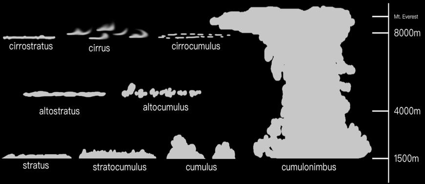

Lecture06-2 Sky and Atmosphere
Atmosphere 大气
Analytic Atmosphere Appearance Modeling
不必按照物理模拟，根据观察找模型拟合
两个参数
- 观察向量与垂直向上向量的夹角 \(\theta\)
- 观察向量与太阳方向的夹角 \(\gamma\)
\[ \mathbb{F}(\theta,\gamma)=(1+Ae^{\frac{B}{\cos\theta+0.01}})\cdot(C+De^{E\gamma}+F\cos^2\gamma+G\cdot\chi(H,\gamma)+I\cdot\cos^{\frac{1}{2}}\theta)\\ L_\lambda = \mathbb{F}(\theta,\gamma)\cdot L_{M\lambda} \]
优势：简单快捷，直接代入计算即可
劣势：只能在地表观察，无法完成空中观察视角；参数固定，无法完成各种天气
Participating Media
物理属性
大气中：空气、气溶胶，形成各种折射和反射
光在Participating Media中：
Absorption 吸收 \[ \dfrac{\mathrm dL(\mathrm x,\omega)}{\mathrm d\mathrm x}=-\sigma_\alpha\cdot L(\mathrm x,\omega)\\ \sigma_\alpha:\text{Absorption Coeffcient} \]
Out-scattering 对外散射 \[ -\sigma_sL(\mathrm x,\omega)\\ \sigma_s:\text{Scattering Coeffcient} \]
Emission 自发光（火焰、辉光等） \[ \sigma_\alpha L_e(\mathrm x,\omega) \]
In-Scattering 对内散射 接收周围分子的Out-Scattering \[ \sigma_s\int_{S^2}f_p(\mathrm x,\omega,\omega')L(\mathrm x,\omega')\,\mathrm d\omega'\\ f_p(\mathrm x,\omega,\omega'):\text{Phase Function} \]
Radiative Transfer Equation, RTE \[ \sigma_t(\mathrm x)=\sigma_\alpha(\mathrm x)+\sigma_s(\mathrm x)\\ \dfrac{\mathrm dL(\mathrm x,\omega)}{\mathrm d\mathrm x}=-\sigma_t\cdot L(\mathrm x,\omega)+\sigma_\alpha L_e(\mathrm x,\omega)+\sigma_s\int_{S^2}f_p(\mathrm x,\omega,\omega')L(\mathrm x,\omega')\,\mathrm d\omega' \]
Volume Rendering Equation, VRE 对RTE梯度的路径积分 \[ L(P,\omega)=\int_{\mathrm x=0}^\mathrm d T(\mathrm x)[\sigma_\alpha\cdot L_e(\mathrm x,\omega)+\sigma_s\cdot L_i(\mathrm x,\omega)]\,\mathrm d\mathrm x + T(M)L(M,\omega)\\ T(\mathrm x)=e^{-\int_\mathrm x ^P\sigma_t(s)\,\mathrm d s}\\ L_i(\mathrm x,\omega)=\int_{S^2}f_p(\mathrm x,\omega,\omega')L(\mathrm x,\omega')\,\mathrm d\omega' \]
两个关键部分
- Transmitters：远处物体有多少能透视到眼睛
- 光打到空气中的散射、折射后，沿观察方向的光路有多少能进入眼睛
Rayleigh Scattering 瑞利散射 空气中介质尺寸远小于光的波长时，光形成较为均匀的散射；波长越短（蓝紫色）散射越强，波长越长（红色）散射越弱
\[ S(\lambda,\theta,h)=\dfrac{\pi^2(n^2-1)}{2}\cdot\dfrac{\rho(h)}{N}\cdot\dfrac{1}{\lambda^4}\cdot(1+\cos^2\theta)\\ \lambda\,\text{波长}\ h\,\text{海拔高度}\ N\,\text{标准大气压}\ \theta\,\text{观察方向与光传播方向夹角} \] 左半边固定，只需求右半边Phase Function部分
- Scattering Coefficient \(\sigma_s^\text{Rayleigh}(\lambda,h)=\dfrac{8\pi^3(n^2-1)}{3}\cdot\dfrac{\rho(h)}{N}\cdot\dfrac{1}{\lambda^4}\)
- Phase Function 腰果形函数 \(F_\text{Rayleigh}(\theta)=\dfrac{3}{16\pi}(1+\cos^2\theta)\)
Mie Scattering 米氏散射 主要针对气溶胶，介质尺寸接近或大于光的波长时，光形成有一定方向性的散射、沿着光的方向较强；但对波长不敏感
\[ S(\lambda,\theta,h)=\pi^2(n^2-1)\cdot\dfrac{\rho(h)}{N}\cdot\dfrac{1-g}{2+g^2}\cdot\dfrac{(1+\cos^2\theta)}{(1-g^2-2g\cos\theta)^\frac{3}{2}}\\ g\,\text{几何参数，一般由艺术家控制} \]
- Scattering Coefficient \(\sigma_s^\text{Mie}(\lambda,h)=\dfrac{8\pi^3(n^2-1)}{3}\cdot\dfrac{\rho(h)}{N}\)
- Phase Function \(F_\text{Mie}(\theta)=\dfrac{3}{8\pi}\cdot\dfrac{1-g}{2+g^2}\cdot\dfrac{(1+\cos^2\theta)}{(1-g^2-2g\cos\theta)^\frac{3}{2}}\)
- \(g=0\) 时，退化成与瑞利散射分布相同的形状（类似花生豆）； \(g>0\) 时，沿米氏散射方向更多 \(g<0\) 时，反向更多
eg. 雾：即一种气溶胶，对太阳光不同波长无差别散射，故呈白色
eg. 日晕也是米氏散射带来的
光的吸收
- 臭氧吸收长波，红橙黄；甲烷吸收红光
- 假设：臭氧和甲烷均匀分布在大气中
单次散射和多次散射 Single Scattering & Multiple Scattering
Single Scattering \[ L_1=\int_A^BL_{P\to A}\,\mathrm ds \]
Multiple Scattering \[ L_{n+1}=\int_A^B\int_{4\pi}L_n(P,v')\cdot S(\lambda,\theta,h)\cdot T(P\to A)\,\mathrm dv'\mathrm ds \]
Single Scattering的背阳面呈现死黑，Multi Scattering有亮度
解决方法
Ray Marching：沿着观察视线，一步一步积分
Precomputed Atmospheric Scattering
- 把大气散射用Ray Marching预计算成 \(\cos\theta\) 和 \(h\) 为维度的LUT，计算时直接查表（\(\theta\) 为观察视角与垂直向上方向夹角）
- 大气散射的两个部分：通透度Transmittance、散射度Scattering
- 通透度 Transmittance
- 预计算 \(T(\mathrm x)=e^{-\int_\mathrm x^P\sigma_t(s)\,\mathrm ds}\)
- 查表 \(T(\mathrm x_\mathrm v\to \mathrm x_\mathrm m)=\dfrac{T(\mathrm x_\mathrm v\to B)}{T(\mathrm x_\mathrm m\to B)}\)
- 二维LUT
- Single Scattering
- 预计算 \(L_\text{sun}\displaystyle\int_A^BS(\lambda,\theta,h)\cdot(T(\text{sun}\to P)+T(P\to A))\,\mathrm ds\)
- 查表 \(L(\mathrm x_\mathrm v\to \mathrm x_\mathrm m)=L(\mathrm x_\mathrm v\to B)-L(\mathrm x_\mathrm m\to B)\cdot T(\mathrm x_\mathrm v\to \mathrm x_\mathrm m)\)
- 四维LUT，但数值平滑，可以低精度插值，用Virtual Texture放在一张图上
- Multi Scattering
- 利用前面两张LUT，积分预计算得Multi Scattering LUT（一般计算3-4次结果即可）
- 问题
- 预计算开销大
- 天气变化时难以均匀过渡
- 查表插值计算开销也不够小
A Scalable and Production Ready Sky and Atmosphere Rendering Technique
核心思想：
假设：对于空气中的一个分子，来自各个方向的散射是等同的
问题转换为能量衰减问题，每次衰减百分之多少，Multi Scattering计算衰减百分比的级数求和即可
取消海拔高度和太阳位置两个参数，不计算全部情况；只保留天顶角和环方向角两个维度
Ray marching预计算LUT
不物理正确，但效率高、效果好，符合艺术家需要
Cloud 云
云的种类：层云、积云、卷云

早期：Mesh、Billboard 片状贴图
Volumetric Cloud Modeling
优势：全动态，runtime生成 劣势：算法复杂开销大
Weather Texture
是否有值表示云的分布 0-1值表示当前位置云的厚度
云的运动：Texture位移、扰动
Noise Function
- Perlin Noise
- Worley Noise
- 先用Weather Texture生成柱状图
- 再用低频Noise Map腐蚀
- 最后加以高频Noise Map增加细节
Ray Marching渲染云